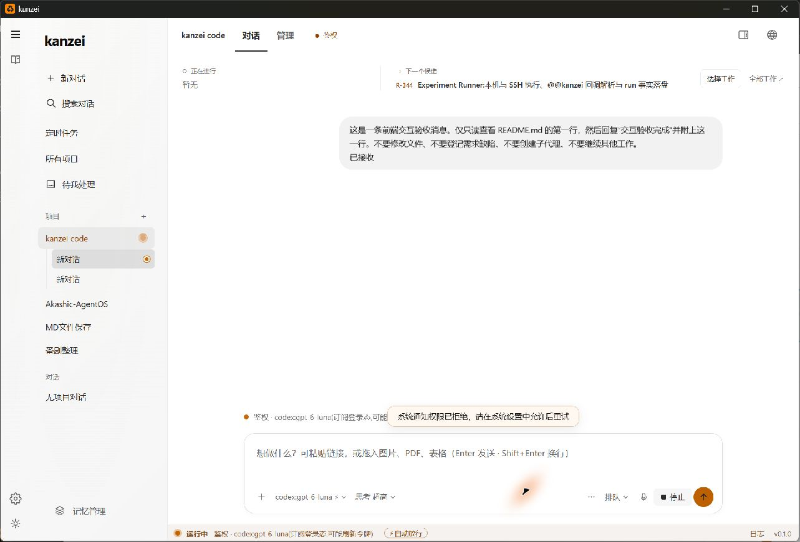
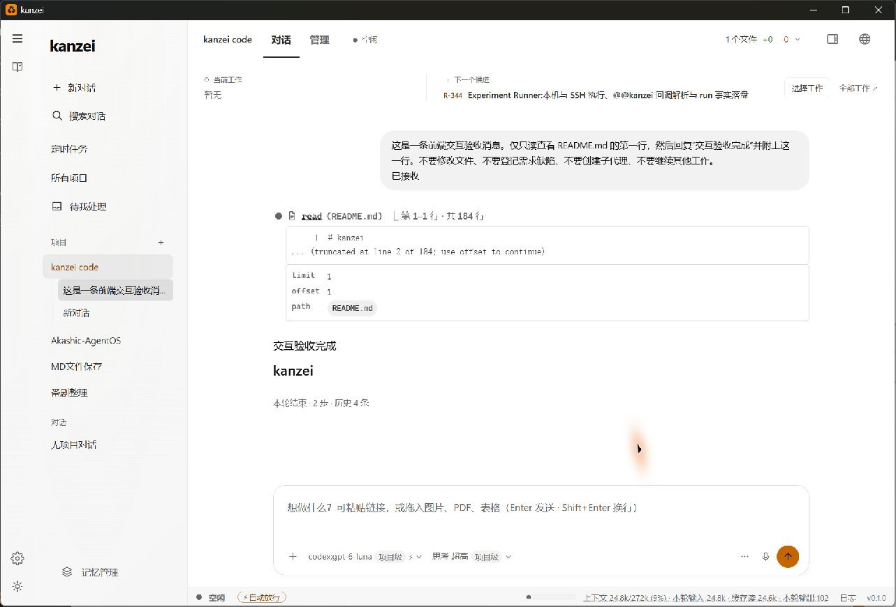
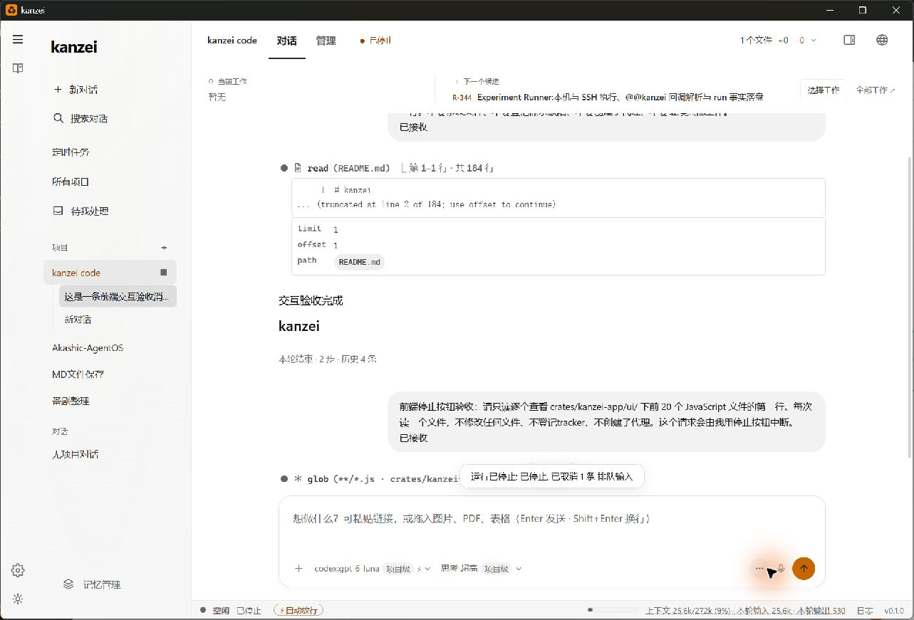
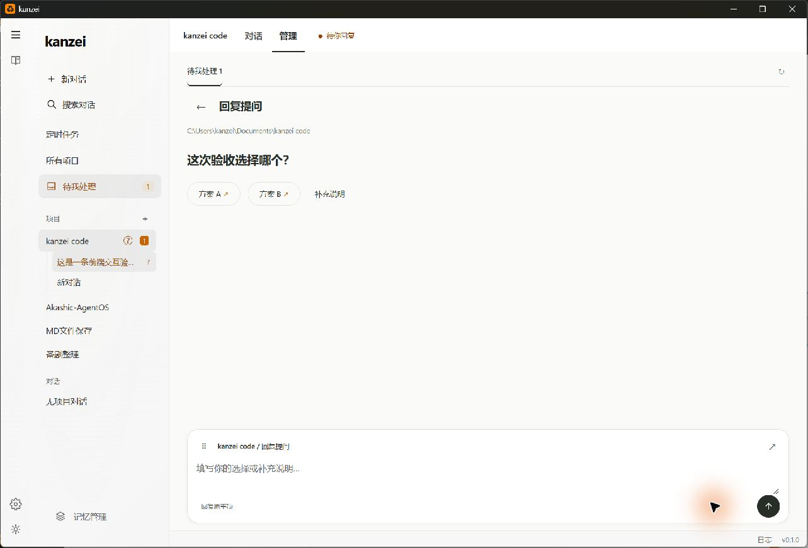

本轮完成 / 任务完成的勾号 优先推荐
只在真实完成后点亮一个青蓝勾号。中间每次工具成功继续低调，运行中保持橙色。
最新补充覆盖了管理页需求面板、编号和数字、刷新与保存反馈，以及模型和编辑器的失败路径。以下保留第二轮历史观察。
查看实际实现截图与补充验收 ↗当前颜色主题保留。
只在少数完成、结果和反馈位置加入青蓝。
上一轮静态布局与状态样式你已审视，本轮不继续推进那套改版建议。重点改为：点击后有没有反馈，等待中是否能取消，失败后是否保留输入，以及切换与回跳时状态是否一致。
只加强很小的图标、勾号或细标记，正文、表面与现有橙色保持原样。
只在真实完成后点亮一个青蓝勾号。中间每次工具成功继续低调，运行中保持橙色。
给文件名旁 16px 左右的小图标少量青蓝；文件名、链接文字与卡片底色不染色。适合交付区和明确的结果资源。
复用现有完成色 token，只强化回执里的小勾号。不要提前给“保存中”或“未保存”染青蓝。
按钮底部一条 2px 细标记足够，点击关闭就收回。若希望青蓝只表示结果，可以不采用这一处。
小编号使用青蓝底、墨蓝字，来源正文保持原色。建议与面板细标记二选一，避免处处都有点缀。
深色：图标原青蓝 #39d8f6。浅色：需要看清的小线性图标用同色相深值 #006579；原青蓝可保留在小底块。已有 --ok 可复用，不必另加一套全局主题。
可切换现有配色 / 少量点缀、逐处开关、明暗主题。演示发送与停止只推进本地示例状态；下面才是真实执行证据。
不是只看空页面：在独立验收对话里实际发送、读取、停止，并完成了一次 question 提问与回答。
发送 → 已接收 → read README.md 首行 → 回复“交互验收完成” → 回到空闲。
第二条只读请求启动 → 点击停止 → “已停止” → 停止按钮收回、输入恢复，已有结果保留。
真实 question → 待我处理计数 1 → 点击方案 A → 发送中与禁用 → 回到对话 → 回复“询问验收结束”。




只读验收完成后没有留下运行中的测试任务。截图和可访问树保存在 round2/assets；异步捕获时树可能落后于画面，判断以持续状态与源码共同核对。
把正常项也列出来。原生操作与模拟回执分开标记，检查断言数不等于全产品覆盖率。
| 路径 | 执行过的交互 | 结果与反馈 | 证据类型 |
|---|
两条有复现支撑的具体问题，其余是可选的小调整。原有颜色主题不在修改范围内。
操作：在真实前端打开模型菜单 → 选择另一模型 → 让 process_update 返回失败 → 等按钮恢复显示原模型 → 立即发送。
这是受控失败回执下的前端复现，没有让真实后端故意保存失败。源代码先修改本地 processItem；保存失败只报错，刷新了显示用的 effectiveModel，却没有同时回退发送读取的本地值。后续轮询可能收敛，但这一窗口内仍可发送失败值。
建议：模型和思考强度的修改，统一管理“已确认值 / 在途值”；失败时本地发送值与显示值一起恢复。发送始终使用同一个已确认配置。保留当前菜单外观。
08-models.js:131–164；08-compose-runtime.js:430–433。复现画面 · 结构化记录
操作：进入文件 → 点击文件 → 暂缓 Monaco loader 完成。文件选择已生效，原 placeholder 被隐藏，编辑区已经显示，但内部为空，也没有“正在加载编辑器…”文字。
建议：在现有编辑器初始化阶段保留明确的加载占位；完成再换成编辑器，失败继续使用既有错误出口。这里修的是反馈缺口，不需要新增页面开关。
17-files-editor.js:448–462。查看等待画面
真实点击“方案 A”后会立即提交，不是先选中再按发送。发送期间选项和按钮会禁用，提交完成后会回到对话，这条链路工作正常。
若要降低第一次使用时的不确定，可以把选项表达为“用方案 A 回复”，或在选项上方补一行“点击即回复”。保留已有防重复提交与发送中反馈。
25-softwire-view.js:517–541；25-softwire.js:552 附近。查看点击后画面
点击发送后，文字和附件均保留，没有静默丢失；现有短提示解释“本轮结束后发送，或新建讨论”。提示消失后，输入区仍缺少常驻的限制说明。
建议从已有 running + attachments 状态直接推导一行“本轮结束后可发送附件”，放在附件旁；不新增独立开关，也不改文字排队 / 插入的现有行为。
08-compose-runtime.js:816–846。查看受控交互
真实点击发送时出现“系统通知权限已拒绝，请在系统设置中允许后重试”；与此同时任务已接收且正常执行。首次看到时，“重试”容易被理解为要重新发送任务。
可改成“系统通知未开启，不影响当前任务执行”，需要时再给“查看通知设置”入口。无需改变现有配色或通知权限设置。
本轮原生 03-send-click.png；触发入口为 ensureNotificationPermission。仅建议调整反馈文字。
这一轮比上一轮更深入，但仍按实际覆盖范围下结论。
继续使用 frontend-skill 的 Apps 规则、computer-use 的原生交互流程与 Vercel Web Interface Guidelines。按你的明确偏好，现有主题优先于通用设计规则。本地材料与哈希见 证据索引。